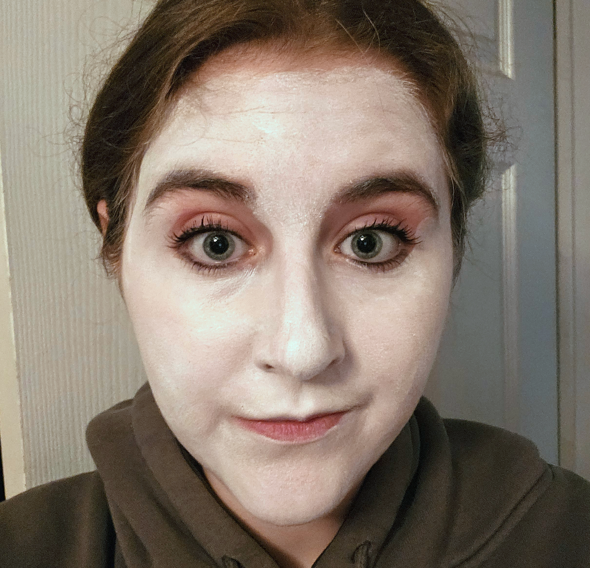

Step 1
You can either start with a white base or use your natural skin tone, up to you!

If you use the white base make sure to spread it out evenly around the face and leave no spots or streaks so the makeup product is full coverage and smooth.